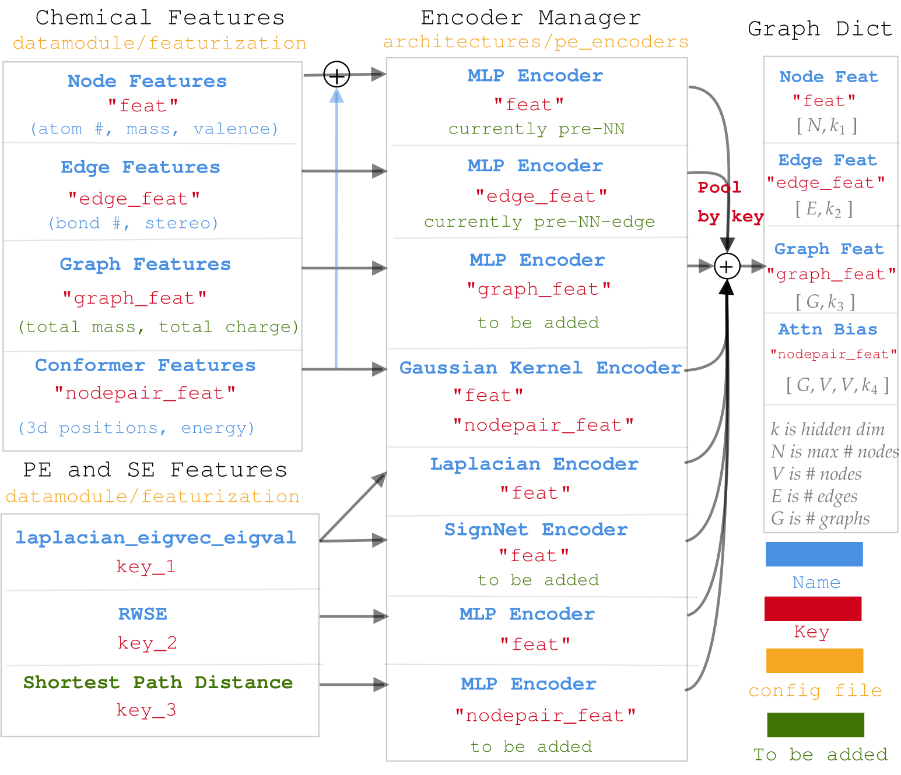
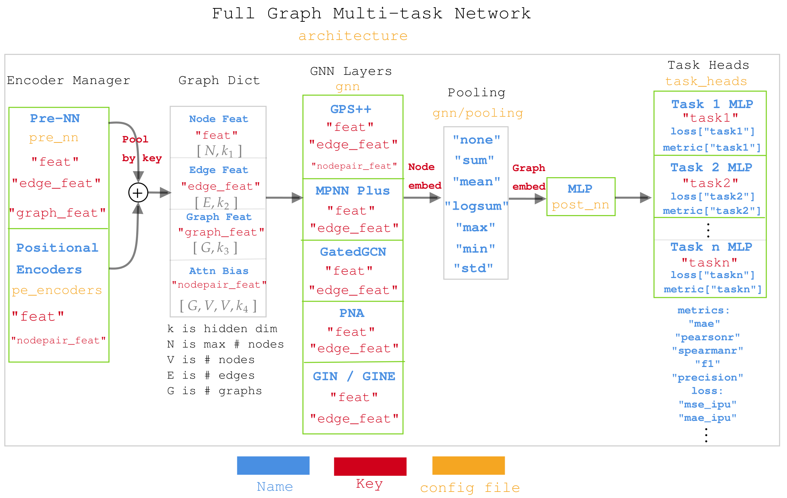

Graphium Library Design¶
The library is designed with 3 things in mind:
- High modularity and configurability with YAML files
- Contain the state-of-the art GNNs, including positional encodings and graph Transformers
- Massively multitasking across diverse and sparse datasets
The current page will walk you through the different aspects of the design that enable that.
Diagram for data processing in Graphium.¶
First, when working with molecules, there are tons of options regarding atomic and bond featurisation that can be extracted from the periodic table, from empirical results, or from simulated 3D structures.
Second, when working with graph Transformers, there are plenty of options regarding the positional and structural encodings (PSE) that are fundamental in driving the accuracy and the generalization of the models.
With this in mind, we propose a very versatile chemical and PSE encoding, alongside an encoder manager, that can be fully configured from the yaml files. The idea is to assign matching input keys to both the features and the encoders, then pool the outputs according to the output keys. It is better summarized in the image below.

Diagram for Muti-task network in Graphium¶
As mentioned, we want to be able to pperform massive multi-tasking to enable us to work across a huge diversity of datasets. The idea is to use a combination of multiple task-heads, where a different MLP is applied to each task predictions. However, it is also designed such that each task can have as many labels as desired, thus enabling to group labels together according to whether they should share weights/losses.
The design is better explained in the image below. Notice how the keys outputed by GraphDict are used differently across the different GNN layers.

Structure of the code¶
The code is built to rapidly iterate on different architectures of neural networks (NN) and graph neural networks (GNN) with Pytorch. The main focus of this work is molecular tasks, and we use the package rdkit to transform molecular SMILES into graphs.
Below are a list of directory and their respective documentations:
Structure of the configs¶
Making the library very modular requires to have configuration files that have >200 lines, which becomes intractable, especially when we only want to have minor changes between configurations.
Hence, we use hydra to enable splitting the configurations into smaller and composable configuration files.
Examples of possibilities include:
- Switching between accelerators (CPU, GPU and IPU)
- Benchmarking different models on the same dataset
- Fine-tuning a pre-trained model on a new dataset
In this document, we describe in details how each of the above functionality is achieved and how users can benefit from this design to achieve the most with Graphium with as little configuration as possible.